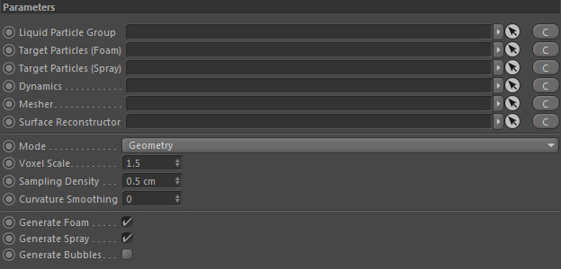
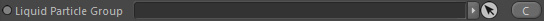
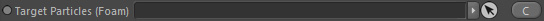
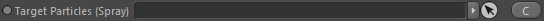
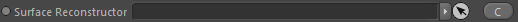
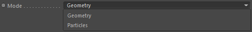
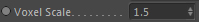
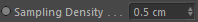
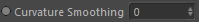
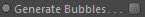

Parameters

Liquid Particle Group

The particle group that contains liquid particles. This node is required.
Target Particles (Foam)

The particle group that will take any diffuse foam particles generated. This node is optional.
If no particle group is linked here, the Liquid Particle Group is used for storing diffuse particles.
Target Particles (Spray)

The particle group that will take any diffuse spray particles generated. This node is optional.
If no particle group is linked here, the Liquid Particle Group is used for storing diffuse particles.
Dynamics
Drop here the liquid dynamics node.
Mesher

Takes an implicit mesher node. This node is only required in the Geometry mode.
Surface Reconstructor

Takes a surface reconstructor to extract the volume from it.
This node is optional in Geometry mode (but it can speed up calculations while being a little less accurate than using a Mesher alone).
This node is also optional in Particles mode, however in that case you instead need a Surface Properties node (calculating normal and curvature).
Mode

Defines which algorithm to use.
Geometry
The geometry mode generates diffuse materials based on geometric (topological) features of the simulation. That's why a mesher is required.
Particles
The particles mode is based on a particles and their distribution. Topological information will be directly extracted from particles.
Voxel Scale

The voxel scale (higher values mean higher resolution) for the calculation of curvature from the liquid volume (or surface reconstructor if assigned...it will be resampled in that case).
Sampling Density

Only used in Geometry mode this option is the density of diffuse particles (distance to each other) generated.
Curvature Smoothing

In Geometry mode curvature is distributed onto the mesh(er)'s surface. This value allows you to smooth the curvature which results in lower curvature values.
Generate Foam
Turn on/off generation of foam particles.
Generate Spray
Turn on/off generation of spray particles.
Generate Bubbles

Turn on/off generation of bubble particles.